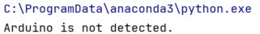
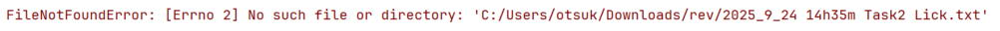
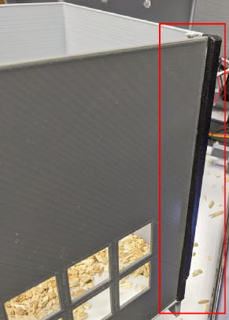

operanthouseのヘッダー
Kitaya lab
Troubleshooting
Error codes

If errors containing cv2.imshow, this indicates a failure to acquire images from the camera. Try to reboot the Raspberry Pi, reconnect the camera and replace the camera to fix it.

This indicates that the Arduino board is not recognized by the system. Verify that the Arduino is properly connected to the Raspberry Pi
This error message suggests that the target folder for data storage does not exist. Set the data folder path again.
If errors containing pickle.load, it suggest the Operant House program failed to load the system or task parameter data. Data files for each task parameter are located in the folder named ParametersForTask* and system data is stored in the data folder. To fix this issue, delete those data folder containing suspected corrupted data file (.dat) and restart the Operant House program. When Operant House can not find the data file, it will create a new data with default values. Because it takes time to set all parameters again, I recommend to copy data folder from other device or make a backup for those data folder before the trouble.
Show an erro at the start of the session
Check whether the data storage folder path is set correctly and camera captures properly.Directory dialog doesn't appear in the double monitor setting
Check the touch screen monitor to see if it is there.IR sensorbar does not detect screen touch properly
Restart the Raspi and reconnect the sensorbar. If it still has the issue, follow the instruction below,<Sensorbar does not detect all the time>
Possible causes:
- There is an obstruction between sensorbar and background plate (e.g. wiring, bedding, burrs in the mask, etc.)
- Using USB cable for charging only.
- Sensorbar has bad connection in printed wiring connector
- Sensobar is broken.
<Sensorbar does not detect only when chamber is attached>
Possible causes:
- Sensor bar is not mounted horizontally to the monitor and it detects a part of the chamber as a nosepoking. Try the followings to fix it,
Fix the angle
Cover the mask slot of the chamber with mat black tape (see picture below)
Print chamber with black filament
Replace the monitor if its surface is not flat
